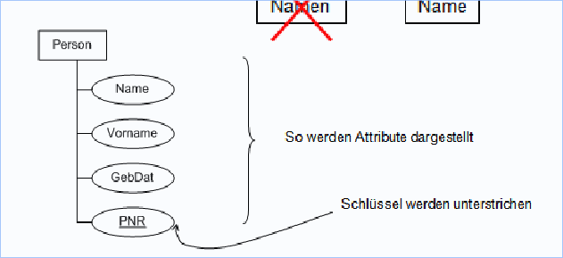

Einführung
Historische Entwicklung
- 1960/1970er Jahren - Daten nur in Dateien zu verwalten ist schwierig. Programmierer mussten immer dieselben Aufgaben lösen, d.h. wurden
Datenbanksystemeentwickelt - 1990er Jahren - Auswertung von Datenbank ist mühsam, d.h. wurden
DataWarehouses und OLAP Lösungenentwickelt - 2000er Jahren - Immer mehr Daten, Aufkommen von
Big Data, KI/AI und Data Mining
Datenbanksysteme
Speichern grosse Datenmengen effizient, widerspruchsfrei und dauerhaft. Die Einbettung erfolgt hierbei in der Three-Tier-Architektur:
- Benutzeroberfläche (UI)
- Anwendungsschicht (Logik)
- Datenbanksystem (Daten)
Seit den 90er Jahren sind vorallem objektrelationale DBMs verbeitet. Seit 2010 gibt es jedoch auch No-SQL Datenbanken.
Datenmodellierung
Tabellen können Beziehungen zueinander haben, welche komplex werden können. Bei vielen Tabellen geht so die Übersicht verloren.
Um diesem Umstand entgegenzuwirken, wurde eine grafische Veranschaulichung entwickelt, die ER-Diagramme.
Entity-Set
Einzelne Entitäten sind Datensätze, auch bekannt als Tupel. Ein Entity-Set wird folgendermassen dargestellt

Darstellung Entity-Set
Die Beziehungen zwischen den Tabellen werden mithilfe eines Rautezeichens dargestellt.
Wichtig hierbei ist, dass die Namen immer im Singular geschrieben werden.
Datenbank-Transaktion
Datenbanksysteme wickeln Datenänderungen in Transaktionen ab:
- Daten können Zusammenhänge haben und sollten daher zusammen also
zeitlich gebündelt ablaufen - Transaktionen können
aus einzelnen Schritten bestehenEine Transaktion ist somit eine Folge von Anweisungen (SQL-Aufrufe), die eine DB von einemkonsistenten Zustandin einenanderen konsistenten Zstuandüberführt. Ohne Transaktionen kommt esbei parallelen Abläufen zu Problemen.
Programmierung von Datenbank-Anwendungen
Es gibt grundsätzlich drei verschiedene Arten wie die Programmierung und die Interatkion mit der Datenbank-Anwendung geschehen kann:
- Direkte Kommunikation mittels
SQL-Statements- Proprietäre Lösung und Bindung an Produkt / Hersteller - Aufrufe von Statements
innerhalb einer Programmiersprache- Keine SQL-Syntaxprüfung - Einsatz von
Advanced Programming Interfaceswie ORM-Mapping
NoSQL
NoSQL steht für not-only SQL und wird für verteilte und strukturierte Datenspeicherung, die aus Performancegründen häufig
auf Eigenschaften klassischer Datenbanksysteme verzichtet angewendet. Zu den Stärken von NoSQL zählen:
- Verteilung auf viele Server möglich
- Gleichzeitig hohe Datenanforderungen und häufige Änderungen an den Daten
Beispiele für NoSQL Datenbanken sind MongoDB, Google Big Table, Amazon Dynamo
Big Data
Big Data ist aus folgenden Gründen entstanden:
- Billiger Verfügbarkeit von Vernetzung und Bandbreite
- Sensoren und mobile Geräte produzieren immer mehr Daten
- Immer bessere Leistung von Rechnern
- Immer schnellere und billigere Speicher
- Skalierung mittels Cloud-Computing
Die Herausforderungen sind hierbei die vier Vs:
- Volume (Datenmenge)
- Velocity (Geschwindigkeit mit welcher Daten zur Verfügung gestellt werden kann)
- Variety (Wie stark sich die Daten voneinander unterscheiden)
- Veracity (Glaubwürdigkeit)
Aktivitäten für den Umgang mit Big-Data-Beständen
Die nachfolgenden Aktivitäten sind anhand der drei F's charakterisierbar:
- Fast - Technische Rahmenbedingungen sollen keine Zeitverzögerung bei der Ausführung verursachen
- Flexible - Akvititäten sollen leicht an sich ändernde Bedingungen anpassbar sein
- Focused - Möglichkeit zur flexiblen Extraktio nvon Daten auf Basis von Trial and Error
Track and Evaluate
- Prozesszustände erfassen, Korrekturen vornehmen etc.
- Herausforderung: Daten sind in Echtzeit (Ortsdaten etc.)
Search and Identify
- Herausfiltern von Objekten anhand von Merkmalen
Analyze
- Data-Mining mittels Regressionsverfahren, Clusteranalysen, Entscheidungsbäumen etc.
Predict and Project (Vorhersagen und Planen)
- Aufgrund der vorhergehenden Schritte Geschäfts- und Fertigungsprozesse optimieren
Gebrauchsformen von Big Data
- Information Retrieval - Direktes Auffinden von Datenobjekten
- Data Analysis - Reports erstellen aufgrund der vorhandenen und aggregierten Geschäftskennzahlen
- Data Mining and Machine Learning - Suche nach
potenziell interessanten Mustern, Auffälligkeit etc.Wennklare Zielgaben vorhanden sind, sprich man vonMachine Learning - Process Mining - Data Mining in Transaktionsdaten (Log Dateien etc.)
- Spam Erkennung
- Bild- und Handschriftenerkennung
Entwicklungsprobleme von Big Data
- Unterschiedliche Schnittstellen, d.h. wenig Kompatibilität
- Unterschiedliche Modelle
- Viele Systeme berücksichtigen nur eines der 4 V's
Datengewinnung und Datenqualität
Eine Datenanalyse wird häufig in separaten Systemen realisiert. Hierzu müssen die Daten mittels ETL (Extract, Transform, Load) Prozesse entsprechend aufbereitet und in ein Data-Warehouse gespeichert werden.
Wird hingegen auf den ETL Prozess verzichtet und direkt in den operativen Quelldaten analysiert, spricht man von Data Lakes
Data Cleaning
- Datensätze können fehlerhaft sein - falsches Format, Ausreisser etc.
- Daten müssen aus Datenschutzgründen
anonymisiert werden
Aspekte der Datenqualität
- Aktualität der Daten
- Transparenz (Glaubwürdigkeit, Rückverfolgung ,Verifizierbarkeit)
- Vollständigkeit
- Konsistenz und Datenintegrität (innere Wiederspruchsfreiheit der Daten)
Entitätsintegration
Daten zu ein und demselben Objekt sollen aus verschiedenen Quellen gefunden und zusammengeführt werden.
Datenherkunft und Abstammung
- Nachvollziehbarkeit von Fehlern muss durch metadaten über die Herkunft der Daten nachvollziehbar bleiben
Prozess und Workflowmanagement
Komplexe Analysen und Transformationen müssen entsprechend beschrieben werden. Dies kann mittels Beschreibungssprachen wie BPMN erfolgen.
Metadaten-Management
- Genaue grammatikalische Beschreibung der Daten
- Dokumentieren der Datenherkunft um
juristische Risiken zu minimieren - Beschreibung der
ETL- und Cleaning-Prozesseum diese später reproduzierbar zu machen
Datenqualität nach ISO8000
Beschreibt Mitarbeiter, Prozesse und Verbesserungsmassnahmen